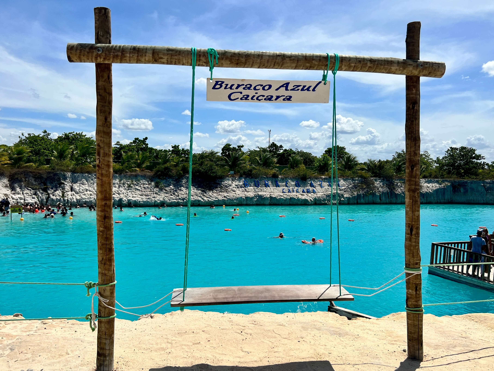

Mergulhe no
mistério
O Buraco Azul é um fenômeno raro, formado há milhares de anos, e possui uma beleza única que parece coisa de outro planeta. Esse tom de azul profundo que se destaca na superfície é um espetáculo natural que poucos lugares no mundo oferecem. Ver isso ao vivo é uma experiência inesquecível!
